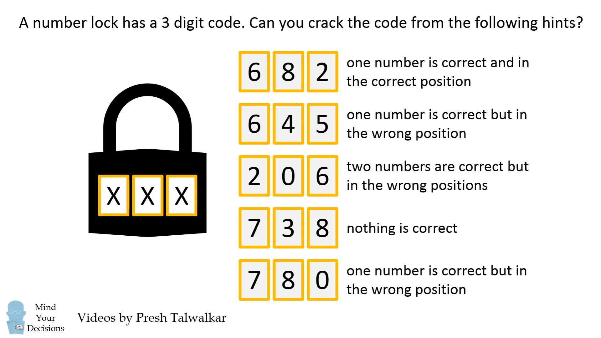
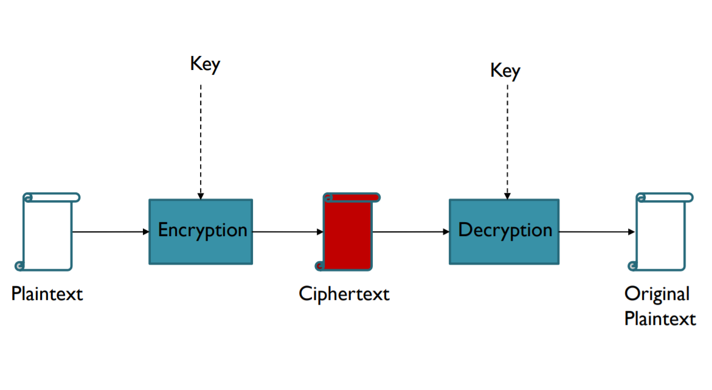
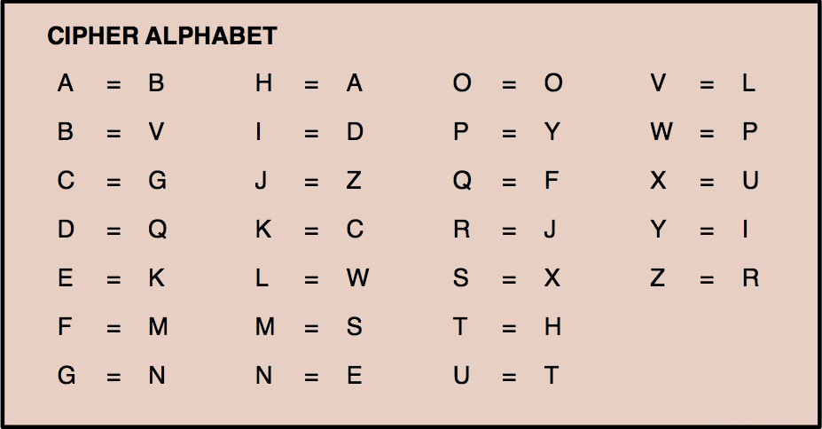

Classic cryptography
Victor Borshchov, Triare
Table of contents
But first, let's warm up!
Basics
-
Plaintext
-
Key
-
Ciphertext
-
Chiper - Cryptosystem
-
Encryption
-
Decryption
Encryption & Decryption
Shift Cipher
- A substitution cipher
-
The Key Space:
- [1 .. 25]
-
Encryption given a key K:
- each letter in the plaintext P is replaced with the K’th letter following corresponding number (shift right)
-
Decryption given K:
- shift left
-
History: K = 3, Caesar’s cipher
Shift cipher: Example
Caesar cipher

Shift Cipher: Cryptanalysis
-
Can an attacker find K?
- YES: exhaustive search,
- key space is small (<= 26 possible keys)
- the attacker can search all the key space in very short time
- Once K is found, very easy to decrypt
Transposition Cipher
-
Write the plaintext horizontally in fixed number
columns and read vertically to encypt.
- The ancient Spartans used a form of transposition cipher
-
Example:
-
P = ‘meet me near the clock tower at twelve midnight tonite’
m e e t m e n e a r t h e c l o c k t o w e r a t t w e l v e m i d n i g h t t o n i t e - C =‘metowteioenhcewmgneeekreihitactaldttmrlotvnte’
-
P = ‘meet me near the clock tower at twelve midnight tonite’
Transposition Cipher: Cryptanalysis
-
Can an attacker decrypt a transposed text?
- Do exhaustive search on number of columns
- Since the key space is small, the attacker can search all the key space in very short time
- Once the number of columns is guessed, very easy to decrypt
Simple substitution cipher
General Substitution Cipher: Cryptanalysis
-
Exhaustive search is infeasible
- for the letter A, there are 25 probabilities
- for the letter B, there are 24 probabilities
- for the letter C, there are 24 probabilities
- ... and so on
- Key space size is 25! ≈ 1.6*10^25
25! = 15511210043330985984000000
Cryptanalysis of Substitution Ciphers: Frequency Analysis
-
Basic ideas:
- Each language has certain features: frequency of letters, or of groups of two or more letters.
- Substitution ciphers preserve the language features.
- Substitution ciphers are vulnerable to frequency analysis attacks.
-
History of frequency analysis:
- Earliest known description of frequency analysis is in a book by the ninth-century scientist al-Kindi
- Rediscovered or introduced from the Arabs in the Europe during the Renaissance
Frequency Features of English
- Vowels, which constitute 40 % of plaintext, are often separated by consonants.
- Letter A is often found in the beginning of a word or second from last.
- Letter I is often third from the end of a word.
- Letter Q is followed only by U
- Some words are more frequent, such as the, and, at, is, on, in
Improve the Security of Substitution Cipher
-
Using nulls
- e.g., using numbers from 1 to 99 as the ciphertext alphabet, some numbers representing nothing are inserted randomly
-
Deliberately misspell words
- e.g., “Thys haz thi ifekkt off diztaughting thi ballans off frikwenseas”
-
Homophonic substitution cipher
- each letter is replaced by a variety of substitutes
- These make frequency analysis more difficult, but not impossible
Summary
- Shift ciphers are easy to break using brute force attacks, they have small key space.
- Substitution ciphers preserve language features and are vulnerable to frequency analysis attacks.
Polyalphabetic Substitution Ciphers
-
Main weaknesses of monoalphabetic substitution ciphers
- each letter in the ciphertext corresponds to only one letter in the plaintext letter
-
Idea for a stronger cipher (1460’s by Alberti)
- use more than one cipher alphabet, and switch between them when encrypting different letters
- Developed into a practical cipher by Vigenère (published in 1586)
The Vigenère Cipher
Security of Vigenère Cipher
- Vigenere masks the frequency with which a character appears in a language: one letter in the ciphertext corresponds to multiple letters in the plaintext. Makes the use of frequency analysis more difficult.
- Any message encrypted by a Vigenere cipher is a collection of as many shift ciphers as there are letters in the key.
Vigenere Cipher: Cryptanalysis
Find the length of the key.
Kerckhoffs’s Principle
The security of a protocol should rely only on the secrecy of the keys, protocol designs should be made public (1883)
Secrecy of a protocol does not work